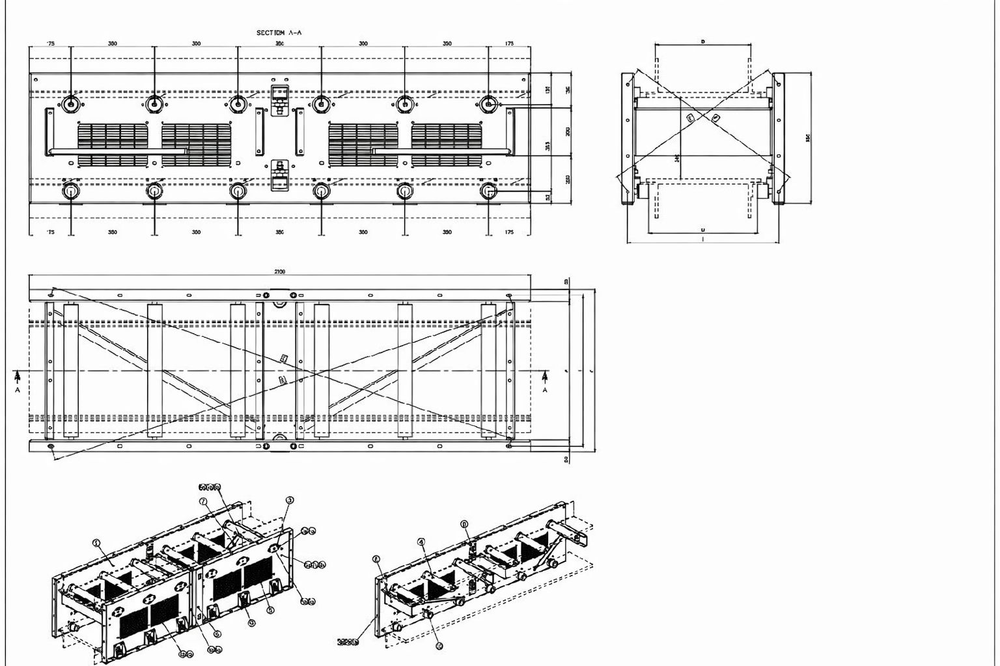

Technical Drawing
The image below shows the technical drawing associated with the identified subassembly.
The document has been included in an anonymized form for thesis purposes.

In the actual operating system, this section would provide direct access to the latest approved technical drawing linked to the corresponding material code.
BACK TO COMPONENT DATA